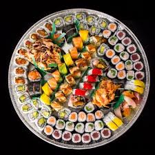
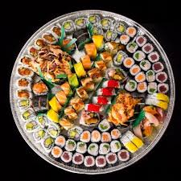

A little bit about us
Golden Dao is an old family restaurant, with an amazing new location at Trondheim, Norge. Some of our other locations are for example in Paris, France and Tokyo, Japan. We are still a very new restaurant chain. Our first restaurant opened in London, England in 2012. Here we got an amazing feedback from our customers and expanded our restaurant and made a restaurant chain in various countries. In august 2013, Gordon Ramsey visited us and loved our food. Since then our reputation exploded in a positive direction. Our dream is to become one of the biggest and most successful restaurant in the world, and for every day that pass, we are one step closer to that goal!
The thing that makes Golden Dao different from other restaurants is our food. Not only is the food good tasting, but the variety is big. Here we serve traditional asian food from all over asia, with a modern sense to it. This means that our recipes are nowhere to be found elsewhere in the world. Some example of type of food we serve is variations of sushi (japanese food), tikka masala (indian food) and pho (vietnamese food). With fresh commodities and top class chefs, including a new world famous master chef Aschmirthan Sivaranjan, we promise an amazing taste experience.
Want a job at one of our restaurant?
Golden Dao is a restaurant chain that is still under progress of expanding. Therefore if you want to become a part of our family then you can send us an email and write a little bit about yourself, and why and where you want to work. Some of our open positions are:
- - Waiter: fulltime and part time employee
- - Cook: fulltime and part time employee
- - Kitchen assistant: part time employee
- - Restaurant manager: full time employee
- - Chef: fulltime employee
It will take between one or two weeks before you'll get a reply on your email. If we like your application then you will be called for an interview.
 
